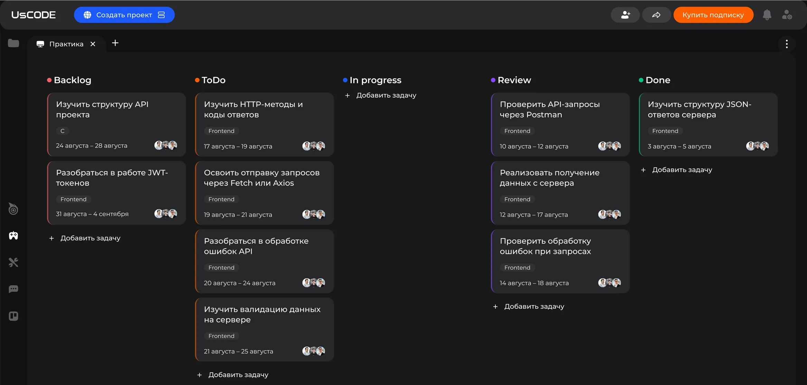
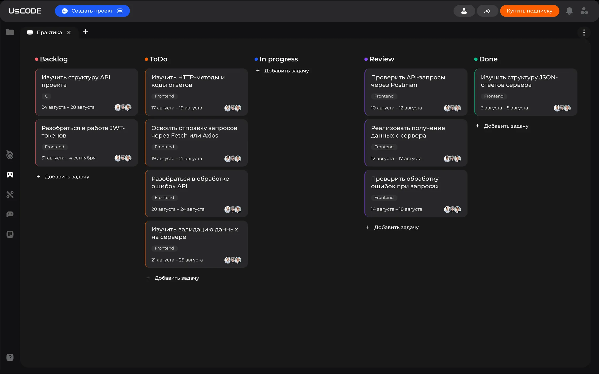

Uscode
Учебная платформа для разработчиков и вайбкодеров с элементами геймификации и симуляцией рабочей среды
03 / 03
Рабочая среда
Погружение в рабочие процессы через игровые сценарии
Практика
Закрепление навыков на реальных задачах

Задача
Разработать интерфейс учебной платформы для разработчиков и вайбкодеров, объединив практическое обучение, игровые механики и симуляцию реальной рабочей среды. Создать целостный пользовательский опыт, который помогает осваивать навыки и погружаться в рабочие процессы
Ограничения
- Несколько функциональных модулей
- Единая система навигации
- Согласованность игровых и рабочих механик
Проблема
Учебная программа не всегда позволяет сосредоточиться на конкретном навыке, который пользователь хочет подтянуть
Решение
Создала каталог практики с поиском заданий по навыкам. Пользователь выбирает задачу, изучает условие и пример решения, пишет код и отправляет на ревью


Проблема
Учебные задачи сложно воспринимать как часть реального рабочего процесса без привычных инструментов управления задачами
Решение
Добавила канбан-доску с задачами и статусами, чтобы пользователь мог отслеживать ход работы и практиковать командные процессы

Проблема
Необходимость общаться с кураторами и другими учащимися в процессе обучения
Решение
Добавила встроенный мессенджер для обсуждения заданий, обмена опытом и получения обратной связи

Буду рада обсудить дальнейшее сотрудничество и возможные форматы взаимодействия
Написать в Telegram